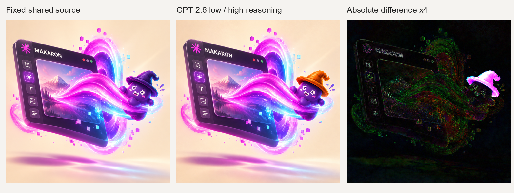

Seedream 5.5 候选评估
B-20261109-seedream55 · 2026-11-10 · 默认 GPT 2.6 Flare 保持不变
当前：代码就绪；Seedream 实测受阻。
GPT 三组已通过真实 Makaron CLI chat 生成、保存和重开；Seedream 无可用凭据，未生成。下列空位明确表示尚未实测。
计时包含三种口径：CLI 启动至服务端完成（含上传）、服务端 run、供应商费用用量账本。产品 credits 包含 Agent，不能与供应商成本相加。
| 项目 | CLI 全链路 | Run | GPT 供应商成本 | 产品扣费 | Seedream |
|---|
| 完整画面 | 33.73s | 29.08s | $0.038303 | 9 credits | 未实测 / 报价 $0.028 |
| 原生透明素材（浅底叠加） | 63.65s | 59.39s | $0.038398 | 9 credits | 未实测 / 报价 $0.028 |
| 固定原图局部编辑 | 25.57s | 21.64s | $0.033722 | 8 credits | 未实测 / 报价 $0.028 |
完整画面
 GPT 2.6 Flare · OpenAI · low / high reasoning
GPT 2.6 Flare · OpenAI · low / high reasoningSeedream 5.5 尚未生成缺少 WaveSpeed API 凭据
质量 / 速度 / 实付费用不可比较
原始素材、提示词、1:1 / 1K 档位已冻结 原生透明素材（浅底叠加）
GPT 2.6 Flare · OpenAI · low / high reasoningSeedream 5.5 尚未生成缺少 WaveSpeed API 凭据
质量 / 速度 / 实付费用不可比较
原始素材、提示词、1:1 / 1K 档位已冻结 固定原图局部编辑
GPT 2.6 Flare · OpenAI · low / high reasoningSeedream 5.5 尚未生成缺少 WaveSpeed API 凭据
质量 / 速度 / 实付费用不可比较
原始素材、提示词、1:1 / 1K 档位已冻结 透明边缘：同一原始 RGBA 叠加深 / 浅底
1024×1024 RGBA，alpha 0–254；61.19% 像素完全透明，12.04% 像素的 alpha 为 1–250。没有抠图或更改原始交付文件。
局部编辑：原图 / 结果 / 4 倍绝对差异

只要求帽子变橙色；未编辑区 MAE 2.62/255，3.16% 像素最大通道变化超过 16。视觉较稳定，不能声称像素不变。
账目：产品侧 26 credits = $0.26；本地路由预检估算 $0.015951，保守合计 $0.275951，低于 $5 目标 / $10 上限。图片供应商成本 $0.110423 单列，不重复相加。没有官方账单对账。
数据回执 · 固定测试集 · 并排进度图 · 中文报告